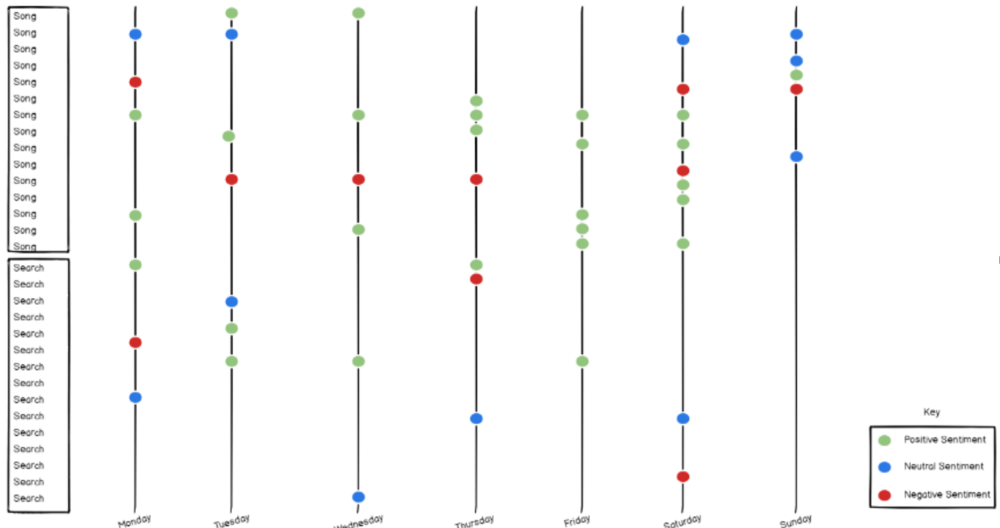
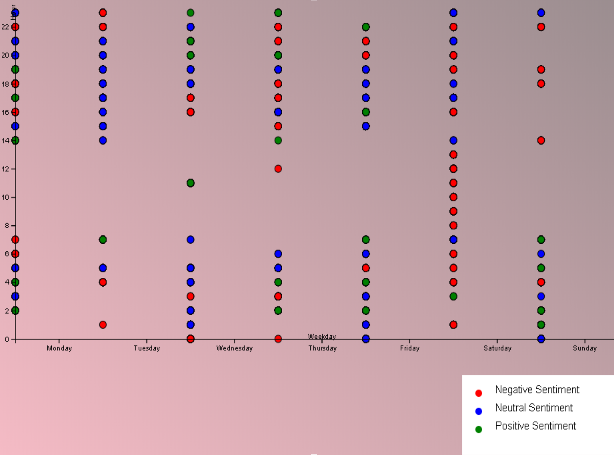

EthicsViz helps people look into the pervasive data associated with their digital footprint.


The first image is a mockup of a potential visualization created through EthicsViz.
The second image is a visualization rendered by EthicsViz
Combining multiple data sources to provide individuals with a look into what companies have
collected about them, and how that data may be used.